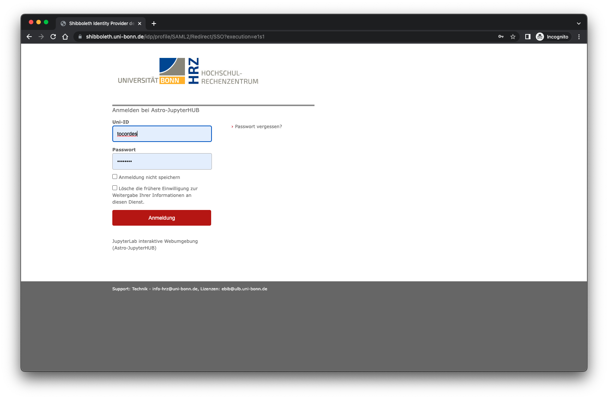
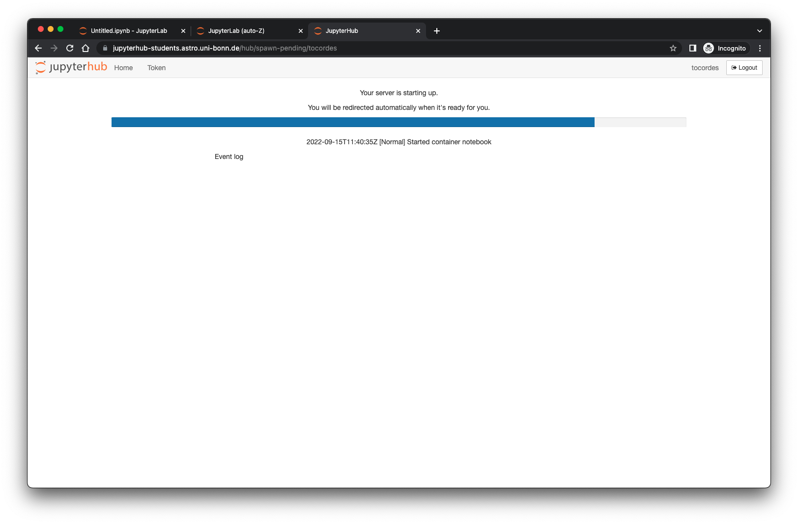
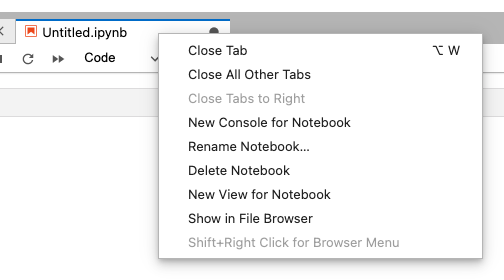

Dieses Dokument ist die Einführungsanleitung für das JupyterLab-System des Argelander-Institut für Astronomie.
Author: Oliver Cordes - 2022-10-11
Inhaltsverzeichnis
Bevor Sie mit der Anleitung beginnen, versichern Sie sich, dass Sie auf Ihrem Computer entweder den Mozilla Firefox- oder den Google Chrome/Chromium-Browser installiert haben. In der Vergangenheit hatten wir einige Probleme mit de mMicrosoft Edge- und Apple Safari-Browser.
Es ist nicht notwendig spezielle Software auf Ihren Geräten, Laptops, Tablets oder Smart Phones zu installieren. Sie brauchen nur eine stabile Internet-Verbindung, einen Browser, eine Tastatur und eine Maus zum Bearbeiten der Dateien. Ein großer Monitor ist hilfreich bei Ihrer Arbeit mit der JupyterLab-Umgebung.
Die JupyterLab-Umgebung läuft auf Servern im Argelander-Institut für Astronomie. Zum Start geben Sie folgende Adresse in Ihrem Browser ein: https://jupyterhub-students.astro.uni-bonn.de
Sie sehen dann die Login-Seite:

Zum Einloggen drücken Sie den Button Sign in with Shibboleth. Sie werden dann zur Shibboleth-Login-Seite der Universität umgeleitet:

Zum Einloggen nutzen Sie bitte Ihre Uni-ID (meistens die Uni-Email-Adresse ohne @uni-bonn.de). Nachdem Sie das Passwort eingegeben haben, werden Sie zurück auf eine Seite des JupyterLab-Umgebung geleitet, auf der Sie Ihre Software-Umgebung (auch Software-Profile) auswählen können:

Auf dieser Seite können Sie jedes Profil auswählen, welches für Ihre Vorlesung/Workshop oder Software-Umgebung passt. Sie können Ihre persönlichen Daten in jedem Profil an der gleiche Stelle nutzen. Der Unterschied zwischen den Profilen ist nur die Softwareinstallation und eventuelle statische Daten.
Nachdem Sie ein Profil ausgewählt haben, sehen Sie eine weitere Seite (manchmal auch nur für eine kurze Zeit):

Wenn alles gut gegangen ist, sehen Sie diese Seite nur für ein paar Sekunden bis Sie das Starten der JupyterLab-Umgebung sehen werden. Wenn es ein Probem mit dem Starten der Umgebung gibt, sehen Sie die Meldungen auf dem Bildschirm. Schauen Sie bitte in das FAQ am Ende des Dokumentes für weitere Hilfen.
Nach dem erfolgreichen Start der Umgebung sehen Sie diesen Standard-Desktop-Bildschirm:

Der Desktop ist wir ein typsiches GUI (Graphical User Interface) aufgebaut, Sie haben ein Menu oben links in dem Fenster, ein Panel an der linken Seite, welcher einen Datei-Browser darstellt und eine Hauptarbeitsfläche rechts, die wie ein Browser mit Reitern organisiert ist. Sie haben am Anfang immer den ersten Tab den Launcher offen. Weitere Tabs können Sie öffnen, wenn Sie das Plus-Zeichen + unter dem Hauptmenu klicken. In der oben rechten Ecke finden Sie einen Button Log Out mit dem Sie die Sitzung beenden können.
Der Datei-Browser ist ähnlich aufgebaut wie ein typischer Datei-Browser, den Sie von anderen Betriebssystemen her kennen. Er zeigt das aktuelle Verzeichnis und alle anderen Unterverzeichnisse und Dateien in dem aktuellen Arbeits-Verzeichnis. Sie können in die Unterverzeichnisse wechseln, in dem Sie auf den Namen in der Liste klicken. Um in das übergeordnete Verzeichnis zurück zu wechseln, klicken Sie auf das entsprechende Verzeichnis in dem Label des aktuellen Verzeichnisses. Der Datei-Browser hat ein paar schnelle Funktionen, die sich über ein Context-Menu erreichen lassen. Dieses Menu können Sie öffnen, in dem Sie die rechte Maustaste innerhalb des Datei-Browsers drücken. Eine Funktion ist z.B. das Erzeugen eines neuen Unterverzeichnisses:

Alle anderen Funktionen innerhalb des Context-Menus sind selbsterklärend. Wenn Sie einen Dopple-Klick auf eine Datei ausführen wird ein entsprechendes Programm geöffnet, z.B. ein Doppelklick auf ein Notebook öffnet den Notebook-Editor.
Der Launcher wird geöffnet, wenn ein neuer Reiter geöffnet wird, Er hat hauptsächliche Start-Buttons für die installieren Tasks und Programmen, z.B. der Python-Notebook-Editor, einen Text-Editor oder ein Linux-Terminal.
Dieser Button erzeugt ein neues Python-Notebook und startet den Notebook-Editor. Der Name des Notebooks ist normalerweise Untitled.ipynb und das Notebook wird in dem aktuellen Areitsverzeichnis abgelegt. Sie sollten das Notebook direkt nach dem Start des Editors umbenennen. Schauen Sie dazu den Abschnitt 2 dieses Dokuments an!
Mit diesem Button öffnen Sie ein neues Linux-Terminal in einem Reiter:

In this terminal you can use all linux commands which are normally installed on a linux system. Please note, that only programs are working which don't use any graphical environment e.g. X11. There is no possibiliy to start any of these programs or to establish a display forwarding tunnel even if you have an X11 server started!
In diesem Terminal können Sie alle Linux-Befehle ausführen, wie in einem normalen Linux-System. Bedenken Sie bitte, dass nur Programm ausgeführt werden können, die keine graphische Umgebung, z.B. X11, brauchen. Es ist technisch nicht möglich, diese Programme zu starten, auch wenn Sie lokal einen X11-Server gestartet haben!
Dieser Button startet ein Hintergrund-Hilfe-System welches im Abschnitt 2.4 dieses Dokuments beschrieben wird.
Wenn Sie diesen Button drücken öffnet sich ein Dialog-Fenster Ihres Web-Browsers. Sie können dort eine Datei auswählen, die dann dirket in das aktuelle Arbeitsverzeichnis des Datei-Browsers hochgeladen wird.
Dieser Button öffnet eine neue Text-Datei, welche den Namen Untitled.txt bekommt und im aktuellen Arbeitsverzeichnis abgelegt wird. Diese Text-Datei kann benutzt werden, um z.B. Python-Skripte zu erstellen. Sie sollten den Namen des Dateis direkt nach der Erstellung umbenennen. Nutzen Sie dazu dazu das Context-Menu (rechter Maus-Klick) auf dem Namen im Reiter.
In diesem Abschnitt werden wir Ihnen anhand eines Beispieles zeigen, wie der Notebook-Editor funktioniert. Dazu werden wir ein Notebook erzeugen mit Programm-Code und Dokumentation.
Um ein neues Python-Notebook zu erzeugen, nutzen Sie den Launcher-Reiter (wenn kein Reiter offen ist, drücken Sie den plus-Button unter dem Hauptmenu) und klicken auf den Button Python 3 in dem Notebook-Abschnitt.

Das neue Notebook bekommt den Namen Untitled.ipynb und wird in dem aktuellen Arbeitsverzeichnis im Datei-Browser abgelegt. Der erste Schritt wird nun sein, das Notebook umzubenennen. Dazu führen Sie einen Maus-Klick mit der rechten Maustaste auf dem Namen im Reiter aus. Dieses öffnet ein neues Context-Menu:

Wählen Sie Rename Notebook aus und geben Sie einen neuen Namen für das Notebook an:

Bitte bedenken Sie, dass das neue Notebook immer in dem aktuellen Arbeitsverzeichnis erzeugt wird. Wenn Sie es in einem anderen Verzeichnis erzeugen möchten, wechseln Sie bitte vorher in das richtige Verzeichnis im Datei-Browser (siehe Abschnitt 1.1). Wenn Sie das Notebook schon erstellt haben, können Sie mit einem rechten Maus-Klick das Context-Menu öffnen und dann erst Cut auswählen und dann in das korrekte Verzeichnis wechseln und dann über das Context-Menu Paste die Datei an die richtige Stelle verschieben.
Der einfachste Weg ist ein Doppel-Klick auf ein Notebook in einem Verzeichnis im Datei-Browser. Diese Aktion öffnet den Notebook-Editor mit dem ausgewählten Notebook.
Nachdem wir ein leeres Notebook erzeugt haben, können wir es mit ein wenig Inhalt füllen. Ein Notebook in eine Aneinanderreihung (übereinander) von sogenannten Zellen (cells). Jede zelle kann einen verschiedenen Typ besitzen. Die wichtigsten Typen sind Code-Zellen und Markdown-Zellen. In Code-Zellen können Sie Ihren Programm-Code schreiben, der durch einen Hintergrund-Interpreter, einem Kernel, ausgeführt wird. In unserem Beispiel gibt es nur den Python-Kernel. In anderen Software-Profilen gibt es z.B. bash-, Julia-, C++-Kernel. Markdown-Zellen werden typischerweise dazu genutzt statische Inhalte in ein Notebook zu schreiben, z.B. Code-Dokumentation, Aufgabenbeschreibungen, Bilder usw.
In diesem Beispiel schreiben wir Python-Code in die erste Zelle:

Die este Zelle hat nun das Python-Äquivalent des typischen Hello world!-Programm. Nachdem der Code in die Zelle geschrieben wurde, können Sie die Zelle ausführen, indem Sie die Tastenkombination Shift-Enter drücken. Das Ergebnis des Ausführens wird unter der Zelle ausgegeben.

Nach der Ausführung erzeugt der Notebook-Editor eine weitere leere Zelle mit dem Typ Code. Wir wollen nun diese Zelle in eine Markdown-Zelle umwandeln. Dazu klicken Sie auf das Code-Menu des Editors:

Wählen Sie Markdown aus, um den Typ der Zelle zu ändern:

Das Layout der Zelle hat sich verändert und Sie können nun Inhalt einfügen. Markdown-Kommandos werden in Abschnitt 6 aufgeführt. Ein interessantes Feature ist die Möglichkeit neben Texten auch \(\LaTeX\)-Kommandos auszuführen, z.B. mathematische Formeln werden ähnliich dargestellt wie in \(\LaTeX\)-Dokumenten.

Wenn Sie nun diese Zelle mit Shift-Enter ausführen, sehen Sie nun Ihren Text der Zelle formatiert dargestellt:

\(\LaTeX\)-Kommandos werden perfekt interpretiert.
Um existierende Zellen des Notebooks zu bearbeiten, führen Sie einfach ein Doppel-Klick mit der Maus auf der Zelle aus. Dann sind Sie wieder in dem Editier-Modus der Zelle. Sie können auch jederzeit den Typ der Zelle verändern, wenn Sie z.B. mit einer Code-Zelle gestartet sind und eigentlich ein Dokumentation schreiben wollten.
In jedem Fall nachdem Sie den Inhalt des Notebooks verändert haben, sollten Sie das komplette Notebook mit dem typischen Save-Kommando cmd-S (MacOS), Ctrl-S (Linux, Windows?) sichern. Sie können auch das Hauptmenus nutzen, die alle nötwendigen Funktionen eines Standard-Editors bereitstellen, die Sie vielleicht kennen.
In dem Editor-Menu ist ein spezielles Menu Run. Mit dieser Funtion können Sie eine oder mehrere Zellen Ihres Notebooks ausführen. Dieses ist sinnvoll, wenn Sie viele Code-Zellen verändern und ausführen wollen.

Es kann beim Programmieren oder Testen von Programm-Codes passieren, dass Probleme auftauchen, z.B. Endlosschleifen. In diesem Fal ist das Kernel-Menu wichtig. Hier finden Sie Funktionen, mit denen Sie die Arbeit des Kernels unterbrechen oder neu starten können.

Ein nettes Feature der JupyterLab-Umgebung ist die Context-Hilfe. Sie können diese Hilfe aktivieren, indem Sie auf den Contextual Help-Button im Launcher-Reiter drücken. Dann öffnet sich ein leerer Reiter.

Gehen Sie nun zurück zu einem Notebook-Editor. In der ersten Code-Zelle haben wir das Python-Kommando print. Klicken Sie nun die linke Maustaste und aktivieren Sie die Zelle und klicken Sie ein zweites Mal auf das print-Kommando. Sie können auch die Tastenkombination cmd-I (MacOS) oder Ctrl-I (Linux/Windows) nutzen, die Hilfe-Funktion zu starten. Die Contextual Help-Seite sollte nun den Hilfe-Eintrag für das print-Kommando zeigen. Wenn Sie nun ein anderen Befehl eingeben, verändert sich die Seite, sobald eine gültiger Befehl erkannt wird.

Die JupyterLab-Umgebung ist ein abgeschlossenes System, welches von aussen nur durch den Web-Browser zugänglich ist. Es gibt keinen Weg Daten rein oder raus in die Umgebung zu transferieren, wenn Sie nicht eingeloggt sind.
Wenn Sie eingeloggt sind, haben Sie zwei Möglichkeiten Daten rein und raus zu koperen:
Der beste weg, die Arbeitssitzung zu beenden, ist die logout-Funktion. Sie können dafür den logout button in der oberen rechten Ecke des Browser-Fensters nutzen. Solange Sie sonst das Browser-Fenster offen lassen und mit dem Internet verbunden sind, bleiben Sie in der eingeloggt. Ansonsten kann der JupyterHub-Server die Sitzung automatisch beenden, z.B. bei längerer Inaktivität.
Wenn Sie sich wieder in einer neuen Sitzung anmelden, versucht die Software-Umgebung alle Reiter wieder zu öffnen, die bei der letzten Sitzung genutzt werden. Technisch löscht der Server Ihre Sitzung 30 Minuten nach dem Ausloggen, damit die Ressourcen anderen Nutzern zur Verfügung gestellt werden kann! Sie sollten darauf achten, sich auszuloggen, wenn Sie nicht weiter arbeiten wollen.
Zum Bearbeiten der Jupyter-Notebooks haben wir ein paar Tastatur-Kurzbefehle zusammengestellt, die sehr nützlich sind (nicht alle Kurzbefehle sind hier erwähnt):
Wenn Sie mit MacOS arbeiten, ersetzen Sie bitte command für control (Steuerung). Drücken Sie bitte nicht + (dies meint nur, dass beide Tasten gleichzeitig gedrückt werden sollen).
Shift + Enter führt die markierte Zelle oder Zellen aus - wenn keine Zelle unterhalb existiert, füge eine neue Code-Zelle drunter ein
Ctrl + B Aktiviert oder deaktiviert die linke Seitenleiste
Ctrl + S Sichern und einen Checkpoint anlegen
Ctrl + Shift + S Sichern als
Ctrl + F Suchen
Enter Aktiviert edit mode in der aktivierten Zelle
Nach oben scrollen mit dem Pfeil nach oben
Nach unten scrollen mit dem dem Pfeil nach unten
A Füge eine neue Zelle über der aktiven Zelle ein
B Füge eine neue Zelle unter de aktiven Zelle ein
M Verändere die aktive Zelle in eine Markdown-Zelle
Y Verändere die aktive Zelle in eine Code-Zelle
Shift + Up Arrow Selektiere die aktuelle und die Zelle darüber
Shift + Down Arrow Selektiere die aktuelle und die Zelle darunter
Ctrl + A Selektiere alle Zellen
X Schneide die selektierte Zelle(n) aus
C Kopiere die selektierten Zelle(n)
V Füge die Zelle(n) ein, die vorher kopiert/ausgeschnitten wurden
Shift + M Führe mehere selektierte Zellen in einer Zelle zusammen
DD (D zweimal) Lösche die aktuelle Zelle
00 (Null zweimal) Starte den Kernel neu
Z Nehme die letzte Kommando-Aktion zurück
Esc Aktiviert command mode
Tab Code completion (oder Einrücken, wenn der Cursor am Anfang der Zeile steht)
Shift + Tab Tooltip-Hilfe
Ctrl + Shift + - Teilt die aktive Zelle an der Cursor-Position
Ctrl + ] EinrückenCtrl + [ nach links Rücken
Ctrl + / Selektierte Zeilen kommentieren/oder Kommentarzeichen entfernen
Dazu alle üblichen Kurzbefehle für das Selektieren, Ausschneiden, Kopieren, Einfügen, Zurücknehmen, usw.
In den Jupyter-Notebooks können Sie Markdown-Zellen nutzen, welche sehr nützlich sind für Notizen und Dokumentationen. Prinzipiell können alle bekannten html-Elemente genutzt werden, jedoch gibt es für verschiedene Aufgaben einfache und kürzere Markdown-Befehle.
*Der Text ist kursiv geschrieben!*
_Der Text ist auch kursiv geschrieben!_
**Der Text ist fett geschrieben!**
__Der Text is auch fett geschrieben!__Der Text ist kursiv geschrieben!
Der Text ist auch kursiv geschrieben!
Der Text ist fett geschrieben!
Der Text is auch fett geschrieben!
# Überschrift 1
## Überschrift 2
### Überschrift 3
#### Überschrift 4Überschriften eerscheinen in verschiedenen Größen, # Überschrift 1 ist die Größte und die anderen werden dann kontinuierlich kleiner. (Ein Beispiel ist weggelassen, weil es dann
das Inhaltsverzeichnis stört!)
Listen gibt es als Aufzählung und als Spiegelstrich-Liste:
* Vor den Listen muss immer eine Leerzeile stehen (oder ein anderes Block-Element)
* Spiegelstrich-Listen fangen mit einem `*` vor jedem Element an
- `-` geht auch
* Eine Einrückung erzeugt eine verschachtelte Liste
1. Aufzählungen werden so gemacht.
2. Jedes Element muss wie `1.` (Zahl-Punkt-Leerzeichen) beginnen
42. Es macht keinen Unterschied, welche Zahl genutzt wird, es wird immer hochgezählt
1. Man kann also jede Zeile mit `1.` beginnen* vor jedem Element an- geht auch
1. (Zahl-Punkt-Leerzeichen) beginnen1. beginnenInline-Code wird mit rückwärts geneigten Hochkommata (backticks) umrandet:
`Inline-Code`
Wenn der Code selber `Hochkommata` enthältz, die dargestellt werden sollen, können doppelte Hochkommata verwendet werden:
``Code mit `Hochkommata` `` (daran denken, dass die Leerzeichen das wichtigste Set an Hochkommata abgrenzen)
Block-Code wird im Text mit einem ``` angefangen und beendet. Wird eine Programmiersprache beim Start mitgegeben, so bekommt man den Block-Code mit Syntax-Hervorhebung in Farbe:
```python
print('This is a code block')
if a > 1:
x = 1234
else:
x = 42
```So wird das dargestellt:
print('This is a code block')
if a > 1:
x = 1234
else:
x = 42Wenn Sie drei Sterne *** oder drei Striche --- in einer Zeile schreiben, wird daraus eine horizontale Linie erstellt:
Um Bilder einzufügen, nutzt man am Besten das HTML-Kommando:
<img src="figs/aifa_logo.png" style="height: 100px;" />
Dieses Kommando bietet alle Freiheiten, z.B. die relativen Größen des Bildes zu definieren, wenn es notwendig ist. Das Beispiel skaliert das Bild gleichmässig auf eine Höhe von 100 Pixeln.
Links können als einfacher Text:
https://jupyterhub-students.astro.uni-bonn.de
oder mit einem Markdown-Kommando erzeugt werden:
[JupyterHub at AIfA](https://jupyterhub-students.astro.uni-bonn.de)Ein nettes Feature von Markdown-Zellen ist, dass man \(\LaTeX\)-Code direkt in den Text einfügen kann. Dies wird vielfach zum Setzen von mathematischen Ausdrücken genutzt:
Dies ist ein Text mit der Formel $f(x)=x^2$.Dies ist ein Text mit der Formel \(f(x)=x^2\).
Für Formel-Blöcke nutzt man diese Anweisungen:
$$
f(x) = \sum_{i=1}^n i \\
= \frac{n(n+1)}{2}
$$\[ f(x) = \sum_{i=1}^n i \\ = \frac{n(n+1)}{2} \]
Tabellen sind auch möglich, jedoch muss man etwas mehr schreiben.
Dies ist ein einfache Tabelle:
Erste Überschrift | Zweite Überschrift
----------------- | ------------------
Zellen-Inhalt | Zellen-Inhalt
Zellen-Inhalt | Zellen-Inhalt| Erste Überschrift | Zweite Überschrift |
|---|---|
| Zellen-Inhalt | Zellen-Inhalt |
| Zellen-Inhalt | Zellen-Inhalt |
Der Inhalt der Tabellen-Zellen können auch ausgerichtet werden:
| linksbündig | zentriert. | rechtsbündig |
|:------------- |:--------------------:| -------------:|
| Spalte 3 ist | ein wortreicher Text | $1600 |
| Spalte 2 ist | zentriert | $12 |
| Zebrastreifen | sind hübsch | $1 || linksbündig | zentriert | rechtsbündig |
|---|---|---|
| Spalte 3 ist | ein wortreicher Text | $1600 |
| Spalte 2 ist | zentriert | $12 |
| Zebrastreifen | sind hübsch | $1 |
Hier sind ein paar Problemstellungen erwähnt, die helfen können, wenn es zu Problemen mit der JupyterLab-Umgebung kommt:
Wenn ich mich eingeloggt habe, sehe ich nur eine weisse Seite?
Sie arbeiten vermutlich mit dem Microsoft Edge-Browser, nutzen Sie bitte entweder einen Mozilla Firefox- oder Google Chrome/Chromium-Browser.
Wenn ich mich eingeloggt habe, zeigt die Webseite ein Flackern?
Sie arbeiten vermutlich mit einem alten Apple Safari-Browser, nutzen Sie bitte entweder einen Mozilla Firefox- oder Google Chrome/Chromium-Browser.
Die JupyterLab-Umgebung startet nicht ordentlich, was kann ich machen?
Es gibt verschiedene Möglichkeiten, welche das ordentliche Starten verhindern. Wir haben einige bekannte aufgelistet:
Die Context-Hilfe ist nicht verfügbar, nachdem cmd-/Ctrl-I gedrückt wurde?
Wahrscheinlich ist kein Context-Hilfe-Reiter offen. Starten Sie diese im Launcher-Reiter und klicken Sie auf auf den Contextual Help-Button.
Notes: Der Text enthält einige Passagen aus der offiziellen Hilfe-Seite vom
Macdown-Editor  .
.